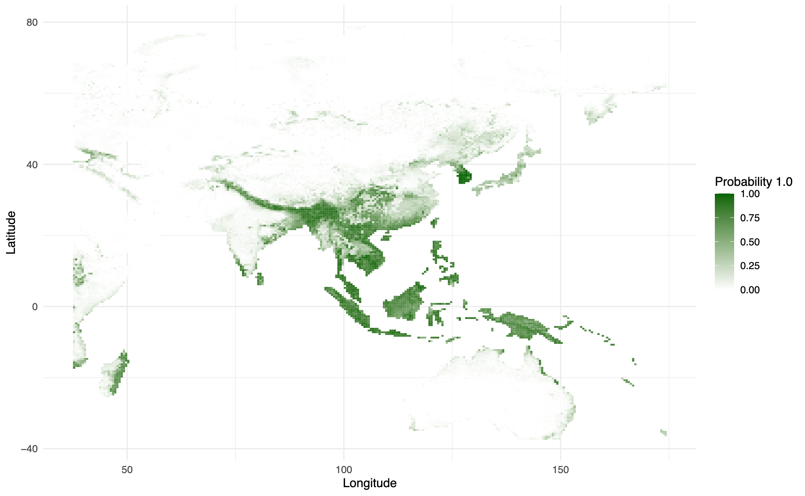
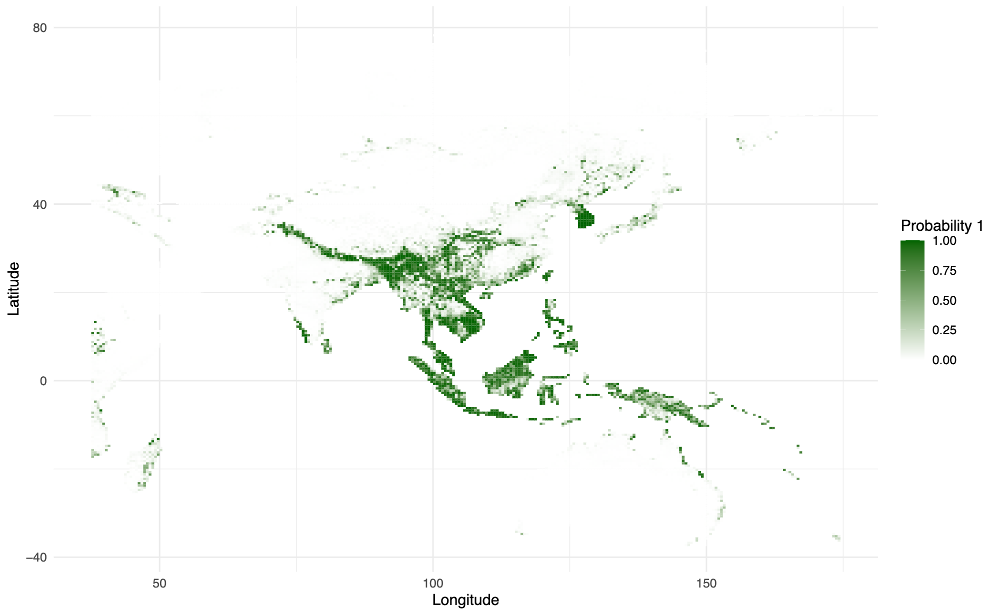
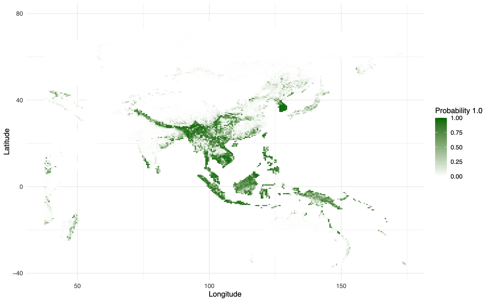

Decision tree-based classifiers
Our method was adapted from Daniel Furman's tutorial on species distribution modeling with python. We implemented regularization for each classifier.

Predicted probability of presence of P. bengalensis using Random Forests.

Predicted probability of presence of P. bengalensis using Extra Trees.

Predicted probability of presence of P. bengalensis using XGBoost.
